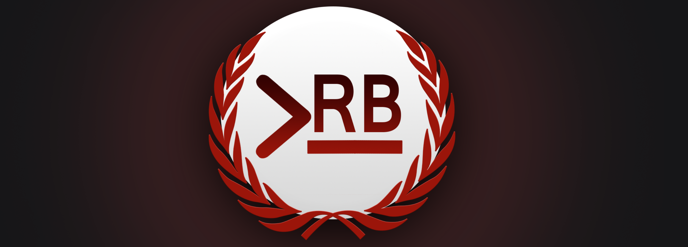

| SEASON 2 | SEASON 1 | HALL OF FAME |
PRB STAFFEL 2 INFOS
Frist: 01.09.
/Zur Quali:
-mind.
16 Bars
-Text to Speech ist erlaubt
(damit der tighte Bär Balu mitmachen kann)
-sollte zumindest an einer Stelle
irgendeine Art von Front
beinhalten
-Upload
auf: pr0 (sfw/nsfw/nsfp), Youtube, Vimeo... (keine pr0n Seiten
-_-)
-Lyrics
an mich
oder in die Kommentare
-Es gibt zwar keine Pflicht, die
Runde auf pr0 zu uppen, jedoch ist das gerne gesehen :)
/Preisgeld:
-Ich bin arbeitsloser Student, was
erwartet ihr :/
-20€,
also doppelt so viel wie in Staffel 1 (framing ftw)
-Ruhm und Anerkennung der gesamten
pr0 Community (naja vlt. von einem Teil davon...)
/Weiteres:
-Das Turnier startet nur, wenn
mind. 8 Qualis eingereicht werden (in Staffel 1 sind 16
eingegangen)
-Der Sieger battlet am Ende ein
gegen cr00k/Jawa, welcher Staffel 1 gewonnen hat
-Die
Qualis werden bewertet und in 2 Töpfe aufgeteilt, dann
werden aus diesen jeweils
die Paarungen ausgelost, um
zu vermeiden, dass Battles, die ins Finale gehören, zu früh
stattfinden. Strengt
euch also etwas an :D
-Doxxingregeln
aus dem Vorturnier und natürlich generell
alle pr0 Regeln sind zu beachten
Und wie reiche ich meine
Quali ein?
-DiscordPN:
yesyes#2754
-pr0 PN an: flashyy
-Discord
Server
/Bewertungssystem:
Das
Bewertungssystem der ersten Staffel wird zum jetzigem Stande fortgeführt.
Wie auch beim Vorgänger diskutiere ich gerne mit euch
darüber. Der Gedanke Flow und Technik
zusammenzufassen steht beispielsweise im Raum:
| FLOW | 2 | u.a. Treffen des Taktes (duh), Variationen, Stimmeinsatz... |
| TECHNIK | 2 | Reime an sich, Reimlänge, Wortwahl... |
| PUNCHLINES | 4 | gute Fronts, Gegnerbezug, Wortspiele, Delivery, Verpackung... |
| EXTRA | 1 | Aufwand, Hörtgenuss, Video, ....was wir als lobenswert erachten |
| GESAMTEINDRUCK | 1 | Welche Runde hat insgesamt am ehesten Überzeugt? |
Die Bewertung erfolgt stets
im relativ zum Gegner. Es
gibt eine Jury bestehend aus Sars, Infamous und mir.
Die Ergebnisse der Jury werden additiv gewichtet.
Bei weiteren Fragen etc. gerne dem
Discord Server
joinen.